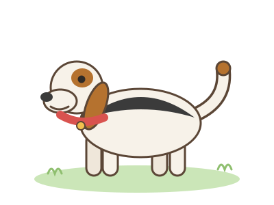
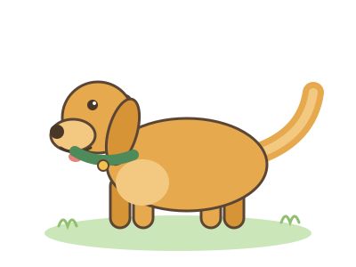
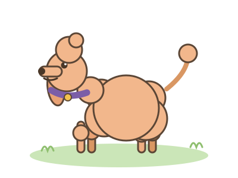

Take a stroll through our virtual park and meet three wonderful dogs.
In the encyclopedia below you will learn how big they are, what kind of
personalities they have, and what it takes to care for them every day.
Dog Encyclopedia
Three breeds, three very different dogs. Which one is your favourite?

Beagle
Size: Small to medium, about 30–40 cm tall at the shoulder.
Personality: Curious, cheerful and famously nosy — beagles follow their nose everywhere.
Everyday care: Needs a good daily walk, regular ear checks and plenty of playtime to stay happy.

Golden Retriever
Size: Large, about 55–65 cm tall at the shoulder.
Personality: Gentle, patient and eager to please — a wonderful friend for the whole family.
Everyday care: Needs brushing a few times a week, long walks and lots of time with people.

Poodle
Size: Comes in three sizes — toy, miniature and standard.
Personality: Smart, proud and playful — poodles learn new tricks faster than almost any breed.
Everyday care: Needs regular grooming for its curly coat and brain games to stay sharp.